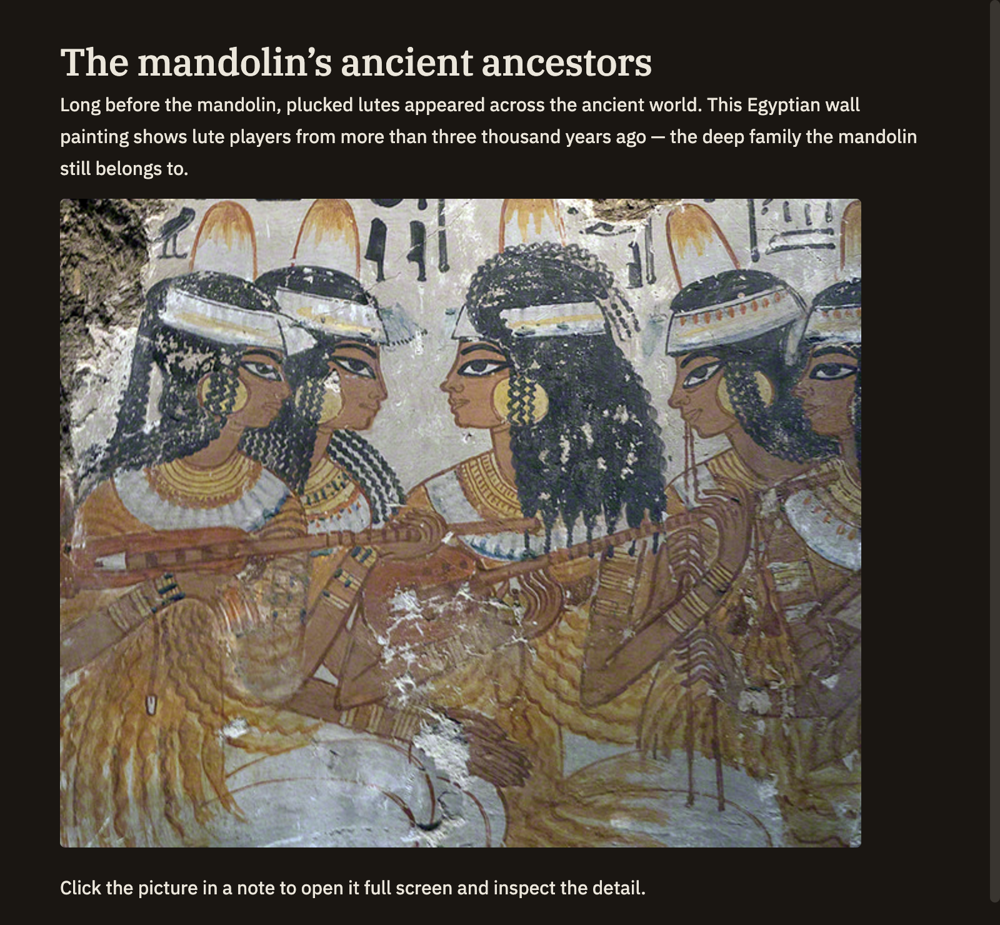

Images
Drop a picture into a note and it just shows up. The quickest way to add one is to drag it in or paste it from your clipboard — Minerva keeps a copy with your notes so it's always there. Images appear inline as you read, and a click enlarges them to full screen.
Adding an image
There are three easy ways to get an image into a note.
Paste or drop the same picture twice and Minerva reuses the one copy it already has, so your notes stay tidy.
Writing an image link by hand
To type an image link yourself, use this shape: an exclamation mark, a short description in square brackets, then the location of the picture in parentheses.
The description in the brackets is the picture's caption for anyone who can't see it, and it shows as a tooltip when you hover. The part in parentheses can point to a picture stored with your notes or to a web address.
Viewing images
As you read a note, images show up right in the flow of your writing. Click one to open it full screen so you can see the detail, then click away or press Esc to close it.

Supported formats
You can add the most common kinds of picture:
Pictures can be up to 5 MB each. If you have something larger, shrink it in your image editor first.